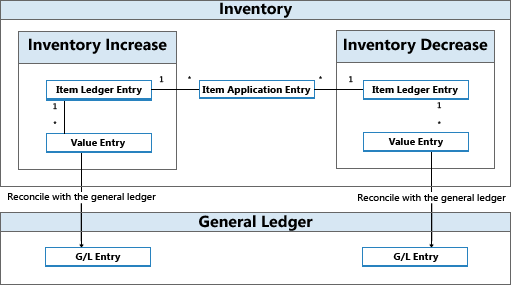

Designdetails: Bestandsbuchung
Jede Bestandstransaktion, wie etwa eine Einkaufslieferung oder eine Verkaufslieferung, bucht zwei Posten unterschiedlichen Typs.
| Postenart | Description |
|---|---|
| Menge | Spiegelt die Menge im Bestand wider. Diese Informationen werden in Artikelposten gespeichert. Begleitet von den Artikelausgleichsposten. |
| Wert | Spiegelt die Änderung des Lagerwerts wider. Diese Informationen werden in Wertposten gespeichert. Pro Artikelposten und pro Kapazitätsposten kann es einen oder mehrere Wertposten geben. Informationen zu Kapazitätswertposten, die sich auf die Verwendung der Produktions- oder Montageressourcen beziehen, finden Sie unter Designdetails: Produktionsauftragsbuchung . |
In Verbindung mit Mengenbuchungen gibt es Artikelausgleichsposten, um die Bestandserhöhung mit der Bestandsminderung zu verknüpfen. Dies ermöglicht dem Kalkulationsmodul, Kosten für Lagerzu- an die entsprechenden Abgänge weiterzuleiten und umgekehrt. Weitere Informationen finden Sie unter Designdetails: Artikelverfolgung.
Artikelposten, Wertposten und Artikelausgleichsposten werden durch eine Artikel Buch.-Blattzeile erstellt, entweder indirekt durch Buchen einer Auftragszeile oder direkt auf der Seite Fenster Artikel Buch.-Blatt.
In regelmäßigen dynamischen Abständen werden Wertposten, die im Bestandsposten erstellt werden, ins Hauptbuch gebucht, um die beiden Bücher aus Finanzkontrollgründen abzugleichen. Weitere Informationen finden Sie unter Designdetails: Abstimmung mit der Finanzbuchhaltung.

Beispiel
Im folgenden Beispiel wird veranschaulicht, wie Artikelposten, Wertposten und Artikelausgleichsposten zu Sachposten führen.
Sie buchen eine Einkaufsbestellung als erhalten und fakturiert für 10 Artikel mit einem EK-Preis von MW 7 und einem Gemeinkostensatz von MW 1. Das Buchungsdatum ist 01-01-20. Die folgenden Einträge werden folgendermaßen erzeugt:
Artikelposten (1)
| Buchungsdatum | Postenart | Einstandsbetrag (tatsächl.) | Menge | Eingabenr. |
|---|---|---|---|---|
| 01-01-20 | Einkauf | 80.00 | 10 | 1 |
Wertposten (1)
| Buchungsdatum | Postenart | Einstandsbetrag (tatsächl.) | Artikelposten Lfd. Nr. | Lfd. Nr. |
|---|---|---|---|---|
| 01-01-20 | EK-Preis | 70.00 | 1 | 1 |
| 01-01-20 | Indirekte Kosten | 10,00 | 1 | 2 |
Artikelausgleichsposten (1)
| Eingabenr. | Artikelposten Lfd. Nr. | Eingeh. Artikelposten Lfd. Nr. | Ausgeh. Artikelposten Lfd. Nr. | Menge |
|---|---|---|---|---|
| 1 | 1 | 1 | 0 | 10 |
Als nächsten Schritt buchen Sie einen Verkauf mit 10 Stück des Artikels mit einem Buchungsdatum aus 01-15-20.
Artikelposten (2)
| Buchungsdatum | Postenart | Einstandsbetrag (tatsächl.) | Menge | Eingabenr. |
|---|---|---|---|---|
| 01-15-20 | Verkauf | -80.00 | -10 | 2 |
Wertposten (2)
| Buchungsdatum | Postenart | Einstandsbetrag (tatsächl.) | Artikelposten Lfd. Nr. | Eingabenr. |
|---|---|---|---|---|
| 01-15-20 | Direkte Kosten | -80.00 | 2 | 3 |
Artikelausgleichsposten (2)
| Eingabenr. | Artikelposten Lfd. Nr. | Eingeh. Artikelposten Lfd. Nr. | Ausgeh. Artikelposten Lfd. Nr. | Menge |
|---|---|---|---|---|
| 2 | 2 | 1 | 2 | -10 |
Am Ende der Buchhaltungsperiode führen Sie die Stapelverarbeitung Bestandkosten in Sachbuch buchen aus, um diese Lagertransaktionen mit der Finanzbuchhaltung abzustimmen.
Weitere Informationen finden Sie unter Designdetails: Konten in der Finanzbuchhaltung.
Die folgenden Tabellen zeigen das Ergebnis der Abstimmung der Lagertransaktionen in diesem Beispiel mit der Finanzbuchhaltung.
Wertposten (3)
| Buchungsdatum | Postenart | Einstandsbetrag (tatsächl.) | Gebuchte Lagerregulierung an G/L | Artikelposten Lfd. Nr. | Lfd. Nr. |
|---|---|---|---|---|---|
| 01-01-20 | EK-Preis | 70.00 | 70.00 | 1 | 1 |
| 01-01-20 | Kosten | 10,00 | 10,00 | 1 | 2 |
| 01-15-20 | Direkte Kosten | -80.00 | -80.00 | 2 | 3 |
Sachposten (3)
| Buchungsdatum | Sachkonto | Kontonr. (En-US-Demo) | Betrag | Eingabenr. |
|---|---|---|---|---|
| 01-01-20 | [Lagerkonto] | 2130 | 70.00 | 1 |
| 01-01-20 | [Direkte Kosten Verrech.-Konto] | 7291 | -70.00 | 2 |
| 01-01-20 | [Lagerkonto] | 2130 | 10,00 | 3 |
| 01.01.07 | [Gemeinkostenverrechnungskonto] | 7292 | -10.00 | 4 |
| 01-15-20 | [Lagerkonto] | 2130 | -80.00 | 5 |
| 01-15-20 | [COGS-Konto] | 7290 | 80.00 | 6 |
Hinweis
Das Buchungsdatum der Sachposten ist das gleiche wie für die zugehörigen Wertposten.
Das Feld Im Sachbuch gebuchte Kosten in der Tabelle Wertposten wird ausgefüllt.
Die Beziehung zwischen Wertposten und Sachkontoposten wird in der Tabelle Sachposten-Artikelbeziehung gespeichert.
Relationsposten im Sachkonto – Tabelle Artikelpostenrelation (3)
| Sachposten Lfd. Nr. | Wertposten Lfd. Nr. | Fibujournalnr. |
|---|---|---|
| 1 | 1 | 1 |
| 2 | 1 | 1 |
| 3 | 2 | 1 |
| 4 | 2 | 1 |
| 5 | 3 | 1 |
| 6 | 3 | 1 |
Montage- und Produktions-Buchung
Kapazitäts- und Ressourcenposten repräsentieren die Zeit, die als bei Produktion oder Montage verbraucht gebucht wird. Diese Prozesskosten werden als Wertposten in der Finanzbuchhaltung zusammen mit den entsprechenden Materialkosten in einer ähnlichen Struktur gebucht, wie für Artikelposten in diesem Thema beschrieben.
Weitere Informationen finden Sie unter Designdetails: Montageauftragsbuchung.
Siehe auch
Designdetails: Lagerkostenberechnung
Designdetails: Konten in der Finanzbuchhaltung
Designdetails: Kostenkomponenten Verwalten der Lagerkosten
Finanzen
Arbeiten mit Business Central
Kostenlose E-Learning-Module für Business Central finden Sie hier